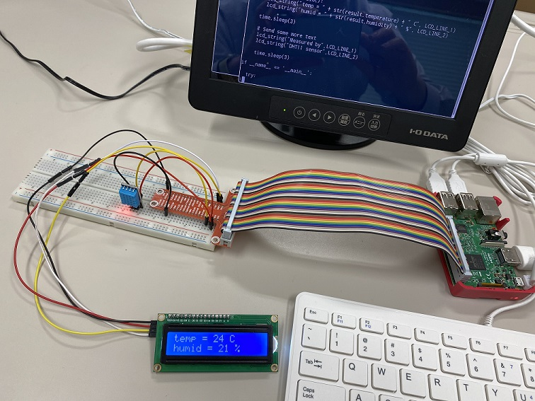
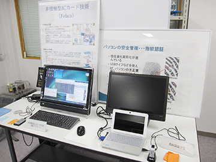

学習内容
情報・ソフトウェア系では、1年生の学科共通教育の後、2・3年生ではコンピュータ、プログラミングの基礎や情報工学の基礎知識を習得します。さらに、高学年ではネットワークシステム、オペレーティングシステム、コンピュータグラフィックス、サイバーセキュリティなどの専門知識とともに、社会実装の演習等を通じて実践的な技術も習得します。
習得した実践的な知識・技術を生かして、情報サービス・ソフトウェア分野においてICT 技術者（エンジニア）として活躍できるだけでなく、より高度な内容の修得を目指して、情報系の大学、情報科学分野の大学院に進学することも出来ます。

情報工学基礎実習Ⅰ（3年）
IoT の要素技術であるセンサーの制御を学習します。

計算機アーキテクチャ（4年）
コンピュータの基本構成とデータの内部表現を学びます。

情報セキュリティ特論（5年）
様々な観点からサイバーセキュリティ技術を学習します。